Transforms & Facets
This lesson outlines the basics of text facets, filters and data cleaning in OpenRefine. It assumes you have already installed OpenRefine.
The story behind the lesson
For this story we wanted to summarize candidate election campaign contributions by race, party and election cycle. Before doing so, we had to clean up the campaign fund names and normalize some other columns in the data.
Start with some data
Download the data using the link above. It should go to your Downloads folder. You would usually move the file to some organized project folder.
You don’t need to open it now, but this is what the file looks like in Excel:
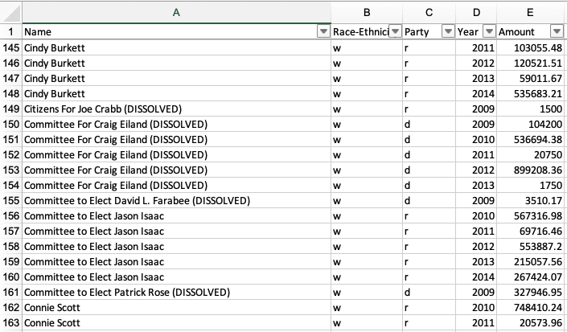
Data peek
There are several things we’d like to do with this data:
- Create a new “Candidate” column based on the PAC-based “Name” column, but clean up the values to just the candidate’s name.
- Create a new “Election Cycle” column so we can later summarize the amounts over these two-year cycles.
- Normalize the “Race-Ethnicity” and “Party” columns.
Start an OpenRefine project
Launch the OpenRefine program (as you normally would for your operating system.)
When you launch OpenRefine it loads in your default browser at
http://127.0.0.1:3333/. That is normal. Both the program and the browser need to run, but you work within the browser.When you launch OpenRefine you’ll see a number of menu items to the left.
Choose the Create Project item.
Make sure you are on the This Computer option.
Click the Choose Files button and go select the TEC Excel file you downloaded.
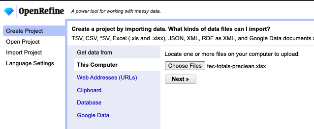
Choose files Once you’ve found your file, click on the Next button.
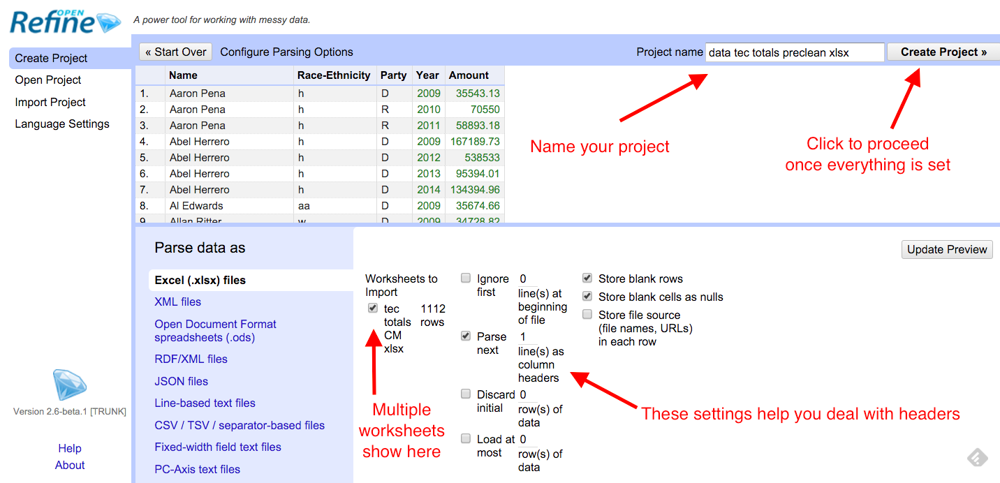
Parse data There are several options you can adjust here. This workbook only has one sheet, but if your source file had more than one you could choose it here. You can also choose to ignore rows at the top fof the file and such.
Click on the Create Project button to get started.
Getting around
Once in our project, there are a couple of controls along the top you should play with:
Change the number of rows you can see
Page through the data using next, last, previous, first.
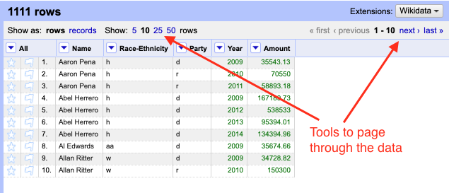
Page data
Create a new column
You usually want to keep your original data so you can refer back to it, so we’ll make a new column before we change our data significantly.
On the Name column, use the dropdown to Edit Column > Add a column based on this column. Like this:

Add column You’ll next get a window where we can define what we want in this new column.
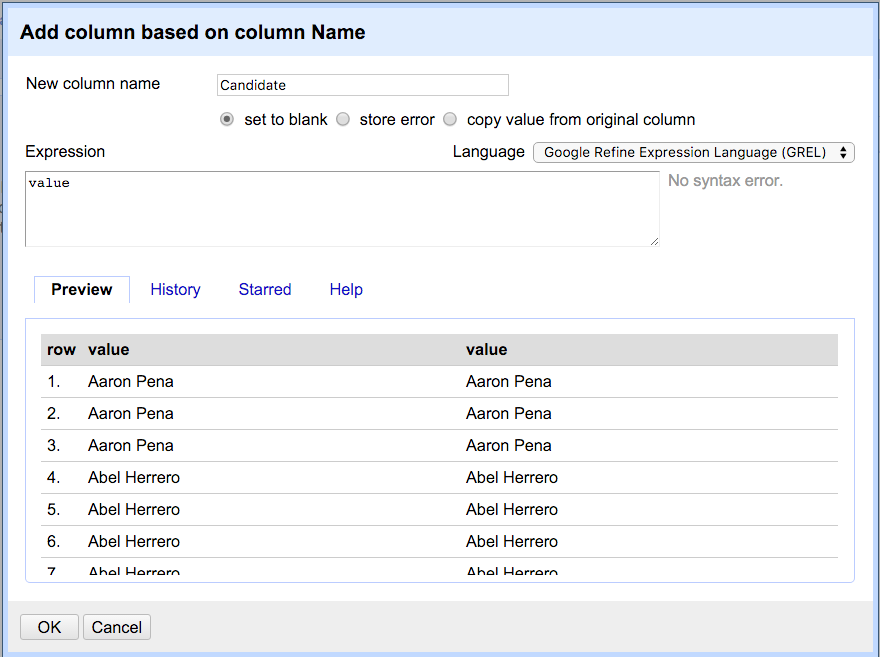
New column setup Take note of the “Expression” window here. You can do a LOT more with this than we are here, but inside we have the expression
value, which means we want to use the “value” of our original column as the content for each row of our new columns. It is possible to make changes to the value (the content) as you create the new column using GREL, a programming language specific to Refine.For the “New column name” type in Candidate.
Leave the Expression field as
value.Click OK to create the new column.
Common transforms
Sometimes cells in data have spaces at the beginning or end of the values that you can’t see, and this can cause problems later. We can fix that quickly with Trim.
Trim
Click on the dropdown for the Candidate column and go to Edit cells > Common transforms > Trim leading and trailing whitespace.
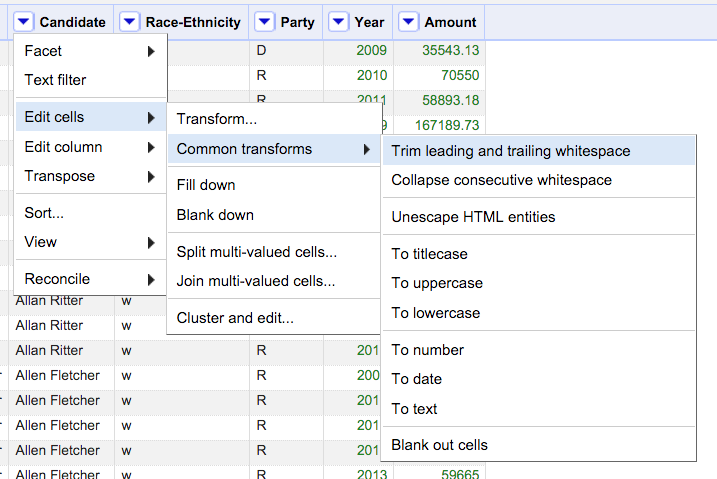
Trim
When you do you’ll get a message about how many fields changed.
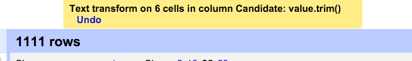
Change to uppercase
You may have noticed other things you can do under Common transforms, like changing everything to UPPERCASE, or removing extra spaces and such.
Let’s use this to change all the “d” and “r” in the Party field to uppercase.
Use the dropdown on the Party column to choose Edit cells > Common transforms > To uppercase.
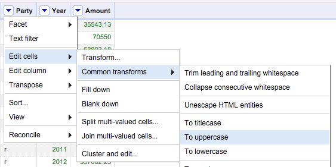
To uppercase
Now you have “D” and “R” for Party.
Undo
Note at the top left of OpenRefine there is an Undo / Redo panel.

OpenRefine keeps track of every move you do, and you can go back in time. This should give you great freedom to try things because you can always back out of it.
You can also Extract the steps and Apply them later if you want to save steps to perform again. (This can be a way to have a record of how you cleaned your data so others or your future self can repeat your work.) The format is a JSON file.
Text facets
One of the most useful skills in OpenRefine is find and change many cells of data in a column at once. The Text facet function gives you a list of all the unique values in your data and tells you in how many rows it shows up.
Go to the dropdown for Candidate and then to Facet > Text facet.
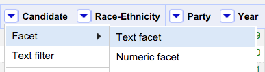
Text facet That will make a list of the values on the left of your screen.
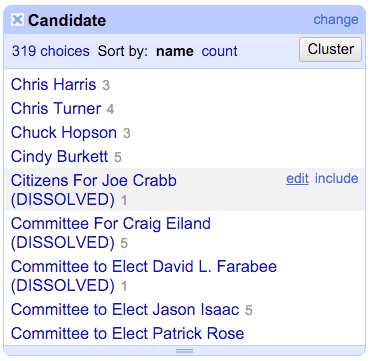
Text facet candidates
OpenRefine found that there are 319 unique values for Candidate in your data, along with a number in grey after it to tell you how many rows have that value.
Sort
The values are listed alphabetically, which can be helpful to find records that are not quite alike but should be.
- Click on Sort by count link in the facet header to show the facets that have the most values.
- Click Sort by name to return to the alphabetical list.
Edit value from a text facet
Notice that when you roll your cursor over a value in the facet list you get a link where you can edit that value.
- Scroll down the Candidate facets to find “Citizens For Joe Crabb (DISSOLVED)”.
- As you hover your cursor over that value, you’ll see an edit menu item. Click on that.
- Change the text to say just “Joe Crabb” and hit Apply.
Once you change those values, the list sorts again and Joe is down by the J’s.
Practice editing from a text facet
A little work on your own to get some practice:
- Close the Candidate text facet by clicking the
Xthat is to the left of the facet title. - Clean up the Race-Ethnicity values to spell out those values to Asian, Black, Hispanic, White. This is straightforward facet editing: Create the facet, then edit the values.
Once you are done:
- Close your Race-Ethnicity facet.
- Add back a text facet for Candidate.
Text filter
You’ll notice there are a bunch of Candidate records that start with “Committee to …”. We’ll use a Text filter to help find those.
From the dropdown on Candidate, choose Text filter.
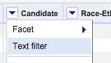
Text filter This puts a box in the left pane under the Candidate facets.

Text filter Type in “committee” and you’ll filter the facet list (and the Matching rows pane at right) so you can more easily find the ones to change.
Go ahead and edit all those records to just the candidate’s name.
There is a “case sensitive” option if that is helpful for your filters. If you are familiar with “regular expressions” you can check that box and built your match based on patterns instead of text strings.
You can practice using the process to fix some other common terms:
- “Texa” to catch both Texas and Texans
- “Campaign”
But when it comes to “Friends”, let’s instead do a search/replace to fix them all at once.
Search and replace with Transform
Now we’ll use the Transform function to search for and replace specific values.
In your Text filter type in
Friends ofso we can see them, but don’t fix them yet. We’ll instead edit all the rows at once using Transform.Click on the Candidate dropdown and go to Edit cells > Transform:

Transform menu This will bring up a window much like the one we used when we created a new column.
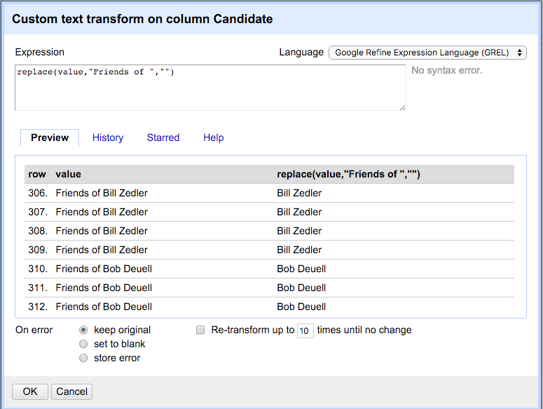
Transform replace Note that in the screenshot above, I’ve typed a function into the expression field. This will make our search and replace happen. You need to do the same.
In the Expression field, type (or copy/paste) this in:
replace(value,"Friends of ","")Let’s break this down:
replaceis a function in the GREL language. It takes three arguments inside the parentheses, separated by commas:- The first argument is the string we are changing. In our case, we are using the variable
value, which refers to the value of the current cell. - The second argument is the string we are searching for. In our case we are searching for
"Friends of ". Note we are including the space after “of” since we don’t want to leave it. - The last argument is what we are replacing that text with, which in our case is nothing, but we have to explicitly say that as a string, hence the
"".
You can see in the preview that we are removing that text from multiple rows.
Click OK when you are ready to execute.
If everything went as planned, your Candidate facet will be blank because the Text filter is still active.
Close the Facet and Text filter windows with the X button at their top-left corner.
Adding values based on other columns
Now that you’ve learned text facets and text filters, we’ll use those skills to create a column called Election Cycle that has values of 2009-2010, 2011-2012 and 2013-2014 based on the Year.
Create a blank column
- Use the Year column dropdown to choose Edit Column > Add column based on this column.
- Name the column “Election cycle”.
- In the Expression field, remove the
valuevariable and just add two quotes with nothing between them, like this:"" - Click OK.
This will create a new column, but there should be nothing in it because we filled it with an “empty” string.
Filter with regular expressions
This isn’t a lesson on regular expressions but I do have one here if you are interested. However, we’ll use a simple one here just to show the power of them.
Our aim here is to add the text “2009-2010” in the Election cycle anytime a row has a year of either 2009 or 2010.
Set up the filter
Create a text facet on the Year column.
Create a text filter on the Year column.
In the text filter, add the text
2009|2010.That
|character between the two years is called a “pipe”. You can find it as the Shift of\on your keyboard, right above the Return key.In the text filter, click the checkbox next to regular expression.
This regular expression is used to search patterns of characters instead of actual text. The | key means “or”. So we are filtering for “2009 or 2010”.

Fill text with Transform
Now that we only have 2009 and 2010 rows selected, we can fill our Election cycle column with the text we want.
Use the dropdown on Election cycle to choose Edit cells > Transform.
Enter the following into expression field:
"2009-2010"Click OK.

Enter text
Don’t forget the quotes. That is what tells Refine to insert this as text.
You’ll see that we now have our Election cycle filled in.
Practice filter and fill
On your own, repeat this process for the year collections of “2011-2012” an “2013-2014”. You’ll want to adjust the filter to capture the years you want, then use Edit cells > Tranform to fill in the proper cycle.
Once you are done, remove all your facets and text filters!
Exporting your cleaned data
Once you cleaned everything the way you want it, you’ll want to export your changed data to get it out of OpenRefine so you can use it elsewhere.
Go under the Export button at top-right and choose the export type of your choice.
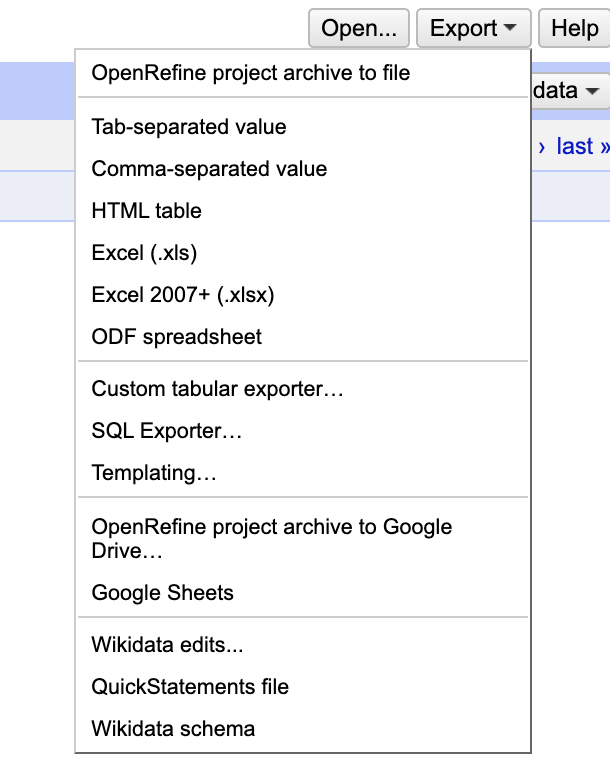
Export
This will download your file to your Downloads folder on your computer. Don’t forget to move the file to a safe place where you can find it again.
That’s the end of this example. We’ll handle Clustering with a different data set.